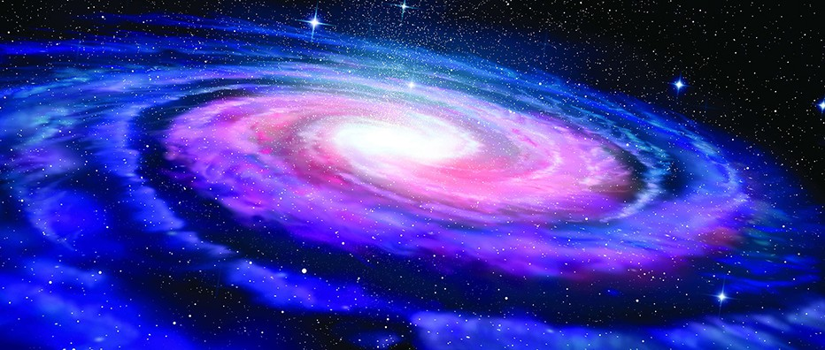
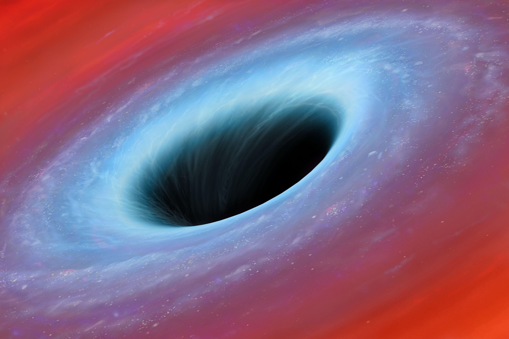
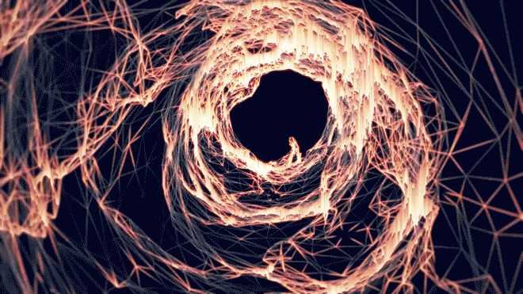

WHAT IS SPACE ?
Space is the boundless three-dimensional extent in which objects and events have relative position and direction. ... The concept of space is considered to be of fundamental importance to an understanding of the physical universe.
PLANETS
Mercury, Venus, Earth, Mars, Jupiter, Saturn, Uranus, Neptune. A planet is any of the large bodies that orbit the Sun, including Mercury, Venus, Earth, Mars, Jupiter, Saturn, Uranus, and Neptune, in order of closeness to the Sun

MARS
Mars is the fourth planet from the sun. Befitting the Red Planet's bloody color, the Romans named it after their god of war. In truth, the Romans copied the ancient Greeks, who also named the planet after their god of war, Ares. Other civilizations also typically gave the planet names based on its color — for example, the Egyptians named it "Her Desher," meaning "the red one," while ancient Chinese astronomers dubbed it "the fire star."
GALAXIES
Galaxies are vast cosmic islands of stars, gas, dust, and dark matter held together by gravity. Hubble's keen eye has revealed intricate details of the shapes, structures, and histories of galaxies — whether alone, as part of small groups, or within immense clusters.
THESE ARE NAMES OF SOME OF THE GALAXIES
1. Andromeda Galaxy
2. Canis Major Dwarf Galaxy
3. Cygnus A
4. Maffei I and II
5. Magellanic Clouds
6. Milky Way Galaxy
7. Virgo A
WHAT IS MILKY WAY
The Milky Way gets its name from a Greek myth about the goddess Hera who sprayed milk across the sky. ... This is what the Milky Way might look like from the side. It's like a giant disk with a bump in the middle! Without a telescope , we can see about 6,000 stars from Earth.
WHAT IS BLACKHOLE
A black hole is a place in space where gravity pulls so much that even light can not get out. The gravity is so strong because matter has been squeezed into a tiny space. ... Because no light can get out, people can't see black holes. They are invisible. Space telescopes with special tools can help find black holes
WORMHOLES

Wormholes are shortcuts in spacetime, popular with science fiction authors and movie directors. They've never been seen, but according to Einstein's general theory of relativity, they might exist.